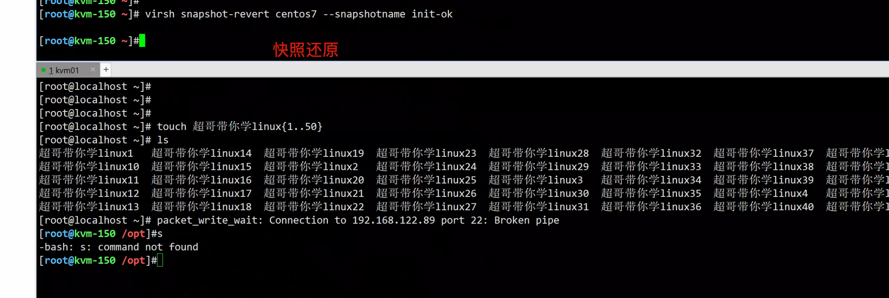
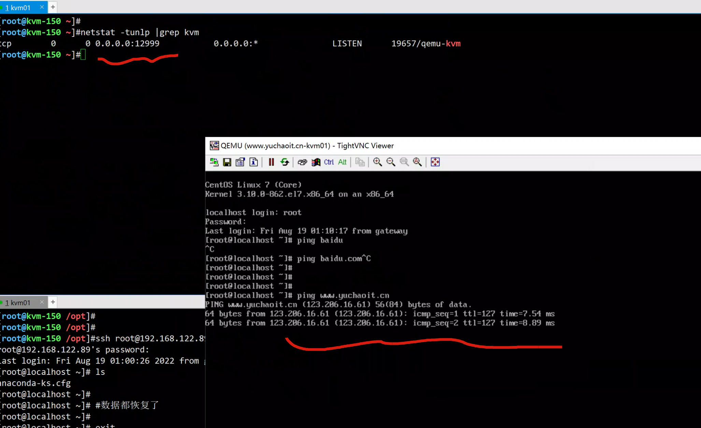
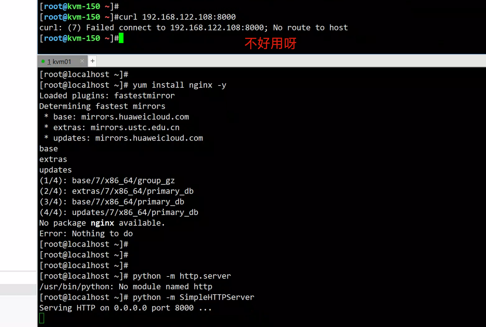
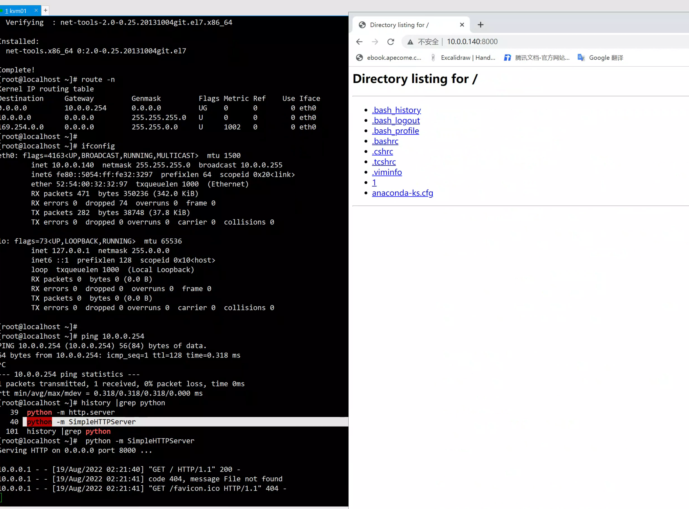
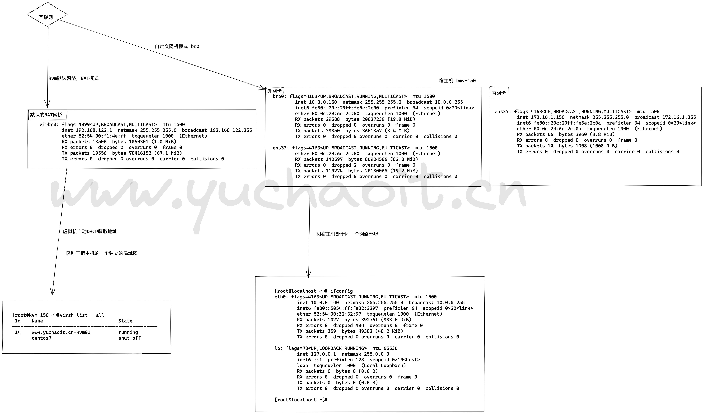
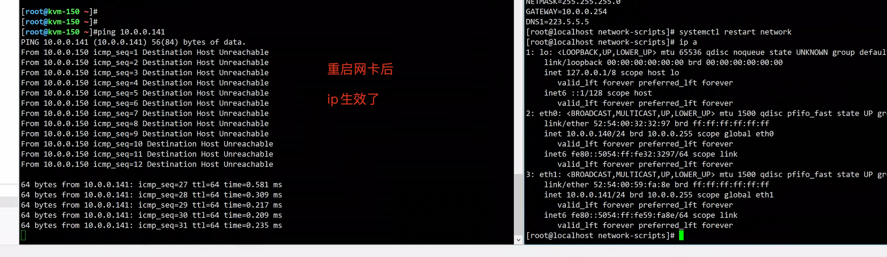
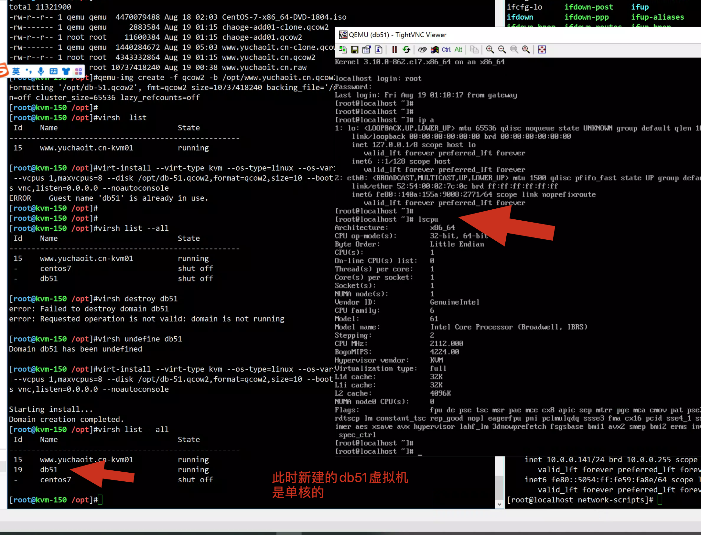
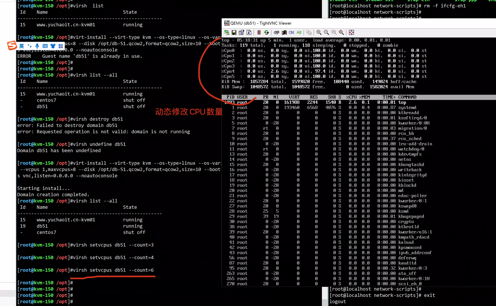
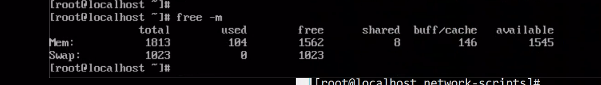
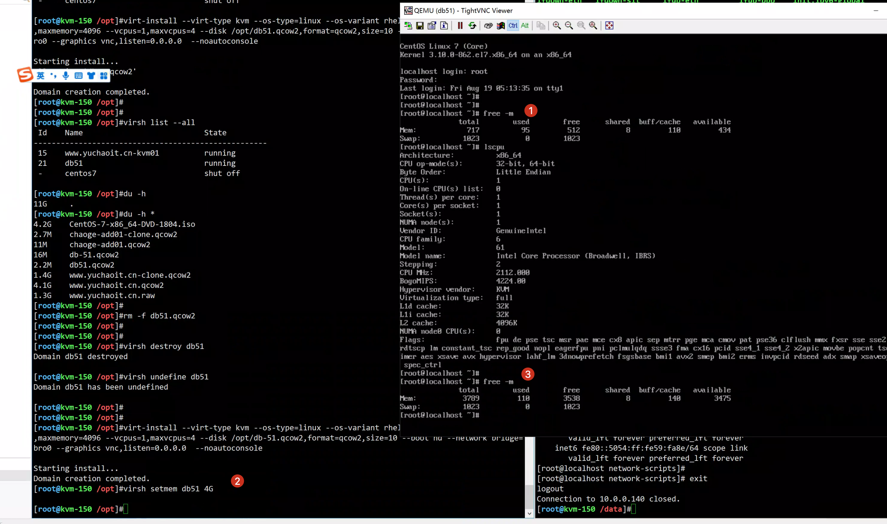

02-kvm进阶实践
注意：raw格式的磁盘无法创建快照，不支持。
想要使用快照功能，磁盘格式必须是qcow2
就好比我们使用vmware的快照功能，现在转化为命令行了
kvm快照命令参数
以及快照后面的数字是unix时间戳。
使用virsh进行KVM虚拟机快照相关命令：
iface-begin 创建一个当前网卡的快照，它可以用来稍后提交或者恢复
snapshot-create 创建一个快照
snapshot-create-as 使用一组参数创建一个快照
snapshot-current 取得当前快照的集合
snapshot-delete 删除一个快照
snapshot-dumpxml 从一个虚拟机的快照导出xml文件
snapshot-edit 编辑一个快照的xml文件
snapshot-info 快照信息
snapshot-list 列出虚拟机的快照列表
snapshot-parent 获取一个快照的父快照名称
snapshot-revert 将虚拟机恢复到一个快照
1.kvm快照实践
1. 创建虚拟机快照
virsh snapshot-create-as --name init-ok centos7
[root@kvm-150 ~]#virsh snapshot-create-as --name init-ok centos7
Domain snapshot init-ok created
2.查看快照列表
[root@kvm-150 /opt]#virsh snapshot-list centos7
Name Creation Time State
------------------------------------------------------------
init-ok 2022-08-19 01:09:52 +0800 running
3.查看快照详细
[root@kvm-150 /opt]#virsh snapshot-info centos7 --snapshotname init-ok
Name: init-ok
Domain: centos7
Current: yes
State: running
Location: internal
Parent: -
Children: 0
Descendants: 0
Metadata: yes
4.快照还原
[root@kvm-150 ~]# virsh snapshot-revert centos7 --snapshotname init-ok
[root@kvm-150 ~]#
5.查看快照文件，linux一切皆文件本质。
[root@kvm-150 ~]#ll /var/lib/libvirt/qemu/snapshot/centos7/
total 8
-rw------- 1 root root 5687 Aug 19 01:12 init-ok.xml
6.删除快照
[root@kvm-150 ~]#virsh snapshot-delete centos7 --snapshotname init-ok
Domain snapshot init-ok deleted
[root@kvm-150 ~]#ll /var/lib/libvirt/qemu/snapshot/centos7/
total 0
配置文件也被删了

2.虚拟机克隆
复制一个虚拟机，需修改如 MAC 地址，名称等所有主机端唯一的配置。
虚拟机的内容并没有改变：
- virt-clone 不修改任何客户机系统内部的配置，它只复制磁盘和主机端的修改。
所以像修改密码，修改静态 IP 地址等操作都在本工具复制范围内。
1.克隆必须要关机
# 克隆时，虚拟机必须关闭
# --auto-clone 从原始客户机配置中自动生成克隆名称和存储路径。
# -o 指向原有的虚拟机
[root@kvm01 data]# virt-clone --auto-clone -o centos7
ERROR Domain with devices to clone must be paused or shutoff.
2.关机，克隆
[root@kvm-150 ~]#
[root@kvm-150 ~]#virsh shutdown centos7
Domain centos7 is being shutdown
[root@kvm-150 ~]#virsh list --all
Id Name State
----------------------------------------------------
- centos7 shut off
[root@kvm-150 ~]#
[root@kvm-150 ~]#virt-clone --auto-clone -o centos7 -n www.yuchaoit.cn-kvm01
# 克隆后的磁盘名
Allocating 'www.yuchaoit.cn-clone.qcow2' | 10 GB 00:00:03
Allocating 'chaoge-add01-clone.qcow2' | 4.0 GB 00:00:00
Clone 'www.yuchaoit.cn-kvm01' created successfully.
[root@kvm-150 ~]#
# 克隆后的磁盘信息
[root@kvm-150 ~]#du -h /opt/*
4.2G /opt/CentOS-7-x86_64-DVD-1804.iso
2.7M /opt/chaoge-add01-clone.qcow2
11M /opt/chaoge-add01.qcow2
1.2G /opt/www.yuchaoit.cn-clone.qcow2
4.1G /opt/www.yuchaoit.cn.qcow2
1.3G /opt/www.yuchaoit.cn.raw
3. 查看新虚拟机
[root@kvm-150 ~]#virsh list --all
Id Name State
----------------------------------------------------
- centos7 shut off
- www.yuchaoit.cn-kvm01 shut off
4.启动克隆后的虚拟机
virsh start www.yuchaoit.cn-kvm01
[root@kvm-150 ~]#virsh vncdisplay www.yuchaoit.cn-kvm01
:0
需要修改克隆后的机器，vnc端口
[root@kvm-150 ~]#virsh list --all
Id Name State
----------------------------------------------------
12 www.yuchaoit.cn-kvm01 running
- centos7 shut off
[root@kvm-150 ~]#virsh shutdown 12
Domain 12 is being shutdown
修改克隆机的端口
105 <graphics type='vnc' port='12999' autoport='no' listen='0.0.0.0'>
106 <listen type='address' address='0.0.0.0'/>
107 </graphics>
端口查询
[root@kvm-150 ~]#netstat -tunlp |grep kvm
tcp 0 0 0.0.0.0:12999 0.0.0.0:* LISTEN 19657/qemu-kvm
[root@kvm-150 ~]#
更新虚拟机配置文件
[root@kvm-150 ~]#virsh define /etc/libvirt/qemu/www.yuchaoit.cn-kvm01.xml
Domain www.yuchaoit.cn-kvm01 d from /etc/libvirt/qemu/www.yuchaoit.cn-kvm01.xml

3.虚拟机网络
我们运行虚拟机的目的是，在虚拟机中运行我们的业务，现在业务所需要的服务都已经运行了，可是除了在宿主机上能访问，其他人都访问不了！！！
我们会利用kvm，创建虚拟机，运行业务服务，如tomcat，lnmp，mysql等等
1.进入虚拟机，创建个nginx服务，试试咋访问？
[root@kvm-150 ~]#virsh domifaddr www.yuchaoit.cn-kvm01
Name MAC address Protocol Address
-------------------------------------------------------------------------------
vnet0 52:54:00:32:32:97 ipv4 192.168.122.108/24
2.运行web服务即可
[root@localhost ~]# python -m SimpleHTTPServer
Serving HTTP on 0.0.0.0 port 8000 ...

因此，我们得配置虚机网络，否则虚机也就没有意义了
3.1 配置kvm桥接
桥接网络，大家应该都还记得，也就是和宿主机处于同一个网络环境。我们vmware里是常用桥接的。
1.创建桥接网络，在宿主机上执行，注意这个ens33，是根据你宿主机的网卡名字来写，然后创建br0网络
看看我们默认的创建命令，默认的network=default 是NAT模式
virt-install --virt-type kvm --os-type=linux --os-variant rhel7 --name centos7 --memory 2024 --vcpus 2 --disk /opt/www.yuchaoit.cn.raw,format=raw,size=10 --cdrom /opt/CentOS-7-x86_64-DVD-1804.iso --network network=default --graphics vnc,listen=0.0.0.0 --noautoconsole
2.创建虚拟网桥（注意要打开vmware的DHCP功能）
[root@kvm-150 ~]#virsh iface-bridge ens33 bro0
Created bridge bro0 with attached device ens33
Bridge interface bro0 started
[root@kvm-150 ~]#
3. 执行后网络会自动重启，网卡配置文件会自动被修改
[root@kvm-150 ~]#cat /etc/sysconfig/network-scripts/ifcfg-ens33
DEVICE=ens33
ONBOOT=yes
BRIDGE="bro0"
4.查看br0网卡配置文件
[root@kvm-150 ~]#cat /etc/sysconfig/network-scripts/ifcfg-bro0
DEVICE="bro0"
ONBOOT="yes"
TYPE="Bridge"
BOOTPROTO="none"
IPADDR="10.0.0.150"
NETMASK="255.255.255.0"
GATEWAY="10.0.0.254"
STP="on"
DELAY="0"
[root@kvm-150 ~]#
5.查看宿主机的网桥情况
[root@kvm-150 ~]#brctl show
bridge name bridge id STP enabled interfaces
bro0 8000.000c296e2c00 yes ens33
virbr0 8000.525400f14eff yes virbr0-nic
vnet0
[root@kvm-150 ~]#
6.可以创建新虚拟机，使用新的自建网桥，或者修改现有虚拟机配置
新建命令
修改现有虚拟机配置，改为桥接br0网络
修改前
82 <interface type='network'>
83 <mac address='52:54:00:32:32:97'/>
84 <source network='default'/>
85 <model type='virtio'/>
86 <address type='pci' domain='0x0000' bus='0x00' slot='0x03' function='0x0'/>
87 </interface>
修改后
82 <interface type='bridge'>
83 <mac address='52:54:00:32:32:97'/>
84 <source bridge='bro0'/>
85 <model type='virtio'/>
86 <address type='pci' domain='0x0000' bus='0x00' slot='0x03' function='0x0'/>
87 </interface>
提示信息
[root@kvm-150 ~]#virsh edit www.yuchaoit.cn-kvm01
Domain www.yuchaoit.cn-kvm01 XML configuration edited.
[root@kvm-150 ~]#
[root@kvm-150 ~]#virsh list --all
Id Name State
----------------------------------------------------
13 www.yuchaoit.cn-kvm01 running
- centos7 shut off
[root@kvm-150 ~]#
3.2 查看新的网络环境
注意网络环境
[root@kvm-150 ~]#virsh domifaddr www.yuchaoit.cn-kvm01
Name MAC address Protocol Address
-------------------------------------------------------------------------------
vnet0 52:54:00:32:32:97 ipv4 192.168.122.108/24
我们要注意的是，在kvm虚机默认网络情况下，是dhcp动态分配的192.168网段地址
那么现在，我们配置kvm虚机和宿主机进行网络桥接，处于同一个网段
那么，如果你的宿主机是动态分配ip地址，那完全没问题，虚机会自动分配ip
如果你的宿主机是分配静态ip地址，kvm虚机也得配置静态ip
修改后的kvm虚拟机网卡
[root@localhost ~]# cat /etc/sysconfig/network-scripts/ifcfg-eth0
TYPE="Ethernet"
PROXY_METHOD="none"
BROWSER_ONLY="no"
BOOTPROTO="none"
DEFROUTE="yes"
IPV4_FAILURE_FATAL="no"
IPV6INIT="yes"
IPV6_AUTOCONF="yes"
IPV6_DEFROUTE="yes"
IPV6_FAILURE_FATAL="no"
IPV6_ADDR_GEN_MODE="stable-privacy"
NAME="eth0"
UUID="0bcfcb25-f308-440f-b0a7-8e42a98f6fb2"
DEVICE="eth0"
ONBOOT="yes"
IPADDR="10.0.0.140"
NETMASK=255.255.255.0
GATEWAY=10.0.0.254
DNS1=223.5.5.5
[root@localhost ~]#
重启网络
[root@localhost ~]# systemctl restart network
# 新网络信息查看
[root@localhost ~]# route -n
Kernel IP routing table
Destination Gateway Genmask Flags Metric Ref Use Iface
0.0.0.0 10.0.0.254 0.0.0.0 UG 0 0 0 eth0
10.0.0.0 0.0.0.0 255.255.255.0 U 0 0 0 eth0
169.254.0.0 0.0.0.0 255.255.0.0 U 1002 0 0 eth0
[root@localhost ~]#
[root@localhost ~]# ifconfig
eth0: flags=4163<UP,BROADCAST,RUNNING,MULTICAST> mtu 1500
inet 10.0.0.140 netmask 255.255.255.0 broadcast 10.0.0.255
inet6 fe80::5054:ff:fe32:3297 prefixlen 64 scopeid 0x20<link>
ether 52:54:00:32:32:97 txqueuelen 1000 (Ethernet)
RX packets 471 bytes 350236 (342.0 KiB)
RX errors 0 dropped 74 overruns 0 frame 0
TX packets 282 bytes 38748 (37.8 KiB)
TX errors 0 dropped 0 overruns 0 carrier 0 collisions 0
lo: flags=73<UP,LOOPBACK,RUNNING> mtu 65536
inet 127.0.0.1 netmask 255.0.0.0
inet6 ::1 prefixlen 128 scopeid 0x10<host>
loop txqueuelen 1000 (Local Loopback)
RX packets 0 bytes 0 (0.0 B)
RX errors 0 dropped 0 overruns 0 frame 0
TX packets 0 bytes 0 (0.0 B)
TX errors 0 dropped 0 overruns 0 carrier 0 collisions 0
[root@localhost ~]#
[root@localhost ~]# ping 10.0.0.254
PING 10.0.0.254 (10.0.0.254) 56(84) bytes of data.
64 bytes from 10.0.0.254: icmp_seq=1 ttl=128 time=0.318 ms
# 这里超哥还关闭了 iptables，selinux
# 虚拟机运行个服务试试

4.图解KVM网络模式

5.kvm热添加技术
热添加技术就是不停机的情况下，在线热添加硬盘，内存，cpu，网卡等设备
热添加技术一般都是在虚拟机资源不够了，又不能停机的情况下使用的，热添加技术是虚拟机相对于物理机的一个很大的优势，它让资源分配变得更灵活！
也就和你vmware添加虚拟机硬件一个意思了
5.1 热添加硬盘超哥前面已经演示过
5.2 热添加网卡
我们这些操作，都是纯命令行操作，若是vmware这样的软件，提供了图形化点击，就简单多了
1.添加一块网卡
# virtio 是对半虚拟化hypervisor 中的一组通用模拟设备的抽象。
[root@kvm-150 ~]#virsh attach-interface www.yuchaoit.cn-kvm01 --type bridge --model virtio --source bro0
Interface attached successfully
2.远程检查虚拟机网卡
[root@localhost ~]# ip a
1: lo: <LOOPBACK,UP,LOWER_UP> mtu 65536 qdisc noqueue state UNKNOWN group default qlen 1000
link/loopback 00:00:00:00:00:00 brd 00:00:00:00:00:00
inet 127.0.0.1/8 scope host lo
valid_lft forever preferred_lft forever
inet6 ::1/128 scope host
valid_lft forever preferred_lft forever
2: eth0: <BROADCAST,MULTICAST,UP,LOWER_UP> mtu 1500 qdisc pfifo_fast state UP group default qlen 1000
link/ether 52:54:00:32:32:97 brd ff:ff:ff:ff:ff:ff
inet 10.0.0.140/24 brd 10.0.0.255 scope global eth0
valid_lft forever preferred_lft forever
inet6 fe80::5054:ff:fe32:3297/64 scope link
valid_lft forever preferred_lft forever
3: eth1: <BROADCAST,MULTICAST> mtu 1500 qdisc noop state DOWN group default qlen 1000
link/ether 52:54:00:31:1d:d6 brd ff:ff:ff:ff:ff:ff
3.要注意命令添加的网卡，都是临时生效，想要永久，还得改配置文件
[root@kvm01 data]# virsh edit centos7
目前只有一组网卡配置
82 <interface type='bridge'>
83 <mac address='52:54:00:32:32:97'/>
84 <source bridge='bro0'/>
85 <model type='virtio'/>
86 <address type='pci' domain='0x0000' bus='0x00' slot='0x03' function='0x0'/>
87 </interface>
复制一组，修改配置后，永久生效
<interface type='bridge'>
<source bridge='bro0'/>
<model type='virtio'/>
</interface>
编辑结果
[root@kvm-150 ~]#virsh edit www.yuchaoit.cn-kvm01
Domain www.yuchaoit.cn-kvm01 XML configuration edited.
4.重启虚拟机，网卡依然还会存在
[root@kvm-150 ~]#virsh shutdown www.yuchaoit.cn-kvm01
Domain www.yuchaoit.cn-kvm01 is being shutdown
[root@kvm-150 ~]#virsh start www.yuchaoit.cn-kvm01
Domain www.yuchaoit.cn-kvm01 started
5.此时给网卡加上参数，即可永久使用
[root@localhost ~]# ip a
1: lo: <LOOPBACK,UP,LOWER_UP> mtu 65536 qdisc noqueue state UNKNOWN group default qlen 1000
link/loopback 00:00:00:00:00:00 brd 00:00:00:00:00:00
inet 127.0.0.1/8 scope host lo
valid_lft forever preferred_lft forever
inet6 ::1/128 scope host
valid_lft forever preferred_lft forever
2: eth0: <BROADCAST,MULTICAST,UP,LOWER_UP> mtu 1500 qdisc pfifo_fast state UP group default qlen 1000
link/ether 52:54:00:32:32:97 brd ff:ff:ff:ff:ff:ff
inet 10.0.0.140/24 brd 10.0.0.255 scope global eth0
valid_lft forever preferred_lft forever
inet6 fe80::5054:ff:fe32:3297/64 scope link
valid_lft forever preferred_lft forever
3: eth1: <BROADCAST,MULTICAST> mtu 1500 qdisc noop state DOWN group default qlen 1000
link/ether 52:54:00:59:fa:8e brd ff:ff:ff:ff:ff:ff
[root@localhost ~]#
6.修改网卡配置
先生成网卡随机uuid
[root@localhost ~]# uuidgen eth1
2a61e160-fecd-4766-908f-3ba548929df9
完整配置
[root@localhost network-scripts]# cat ifcfg-eth1
TYPE="Ethernet"
PROXY_METHOD="none"
BROWSER_ONLY="no"
BOOTPROTO="none"
DEFROUTE="yes"
IPV4_FAILURE_FATAL="no"
IPV6INIT="yes"
IPV6_AUTOCONF="yes"
IPV6_DEFROUTE="yes"
IPV6_FAILURE_FATAL="no"
IPV6_ADDR_GEN_MODE="stable-privacy"
NAME="eth1"
UUID="2a61e160-fecd-4766-908f-3ba548929df9"
DEVICE="eth1"
ONBOOT="yes"
IPADDR="10.0.0.141"
NETMASK=255.255.255.0
GATEWAY=10.0.0.254
DNS1=223.5.5.5
[root@localhost network-scripts]#

5.3 热添加CPU
1. 默认创建的虚机，最大cpu核数就是1，得提前指定最大核数，否则无法创建
# 注意这里的操作，是先彻底删除旧的虚机，留下磁盘文件即可
# 然后新的虚机启动时，用该磁盘启动，即可快速开机
# --boot cdrom,hd,network：指定引导次序；
# 可以基于现有磁盘克隆新机器
# 而非cdrom新装系统
# 使用“-b backing_file”中指定的文件作为后端镜像
[root@kvm-150 /opt]#qemu-img create -f qcow2 -b /opt/www.yuchaoit.cn.qcow2 /opt/db-51.qcow2
Formatting '/opt/db-51.qcow2', fmt=qcow2 size=10737418240 backing_file='/opt/www.yuchaoit.cn.qcow2' encryption=off cluster_size=65536 lazy_refcounts=off
新建机器，设置最大CPU数
[root@kvm-150 ~]#virt-install --virt-type kvm --os-type=linux --os-variant rhel7 --name db51 --memory 2024 --vcpus 1,maxvcpus=8 --disk /opt/db-51.qcow2,format=qcow2,size=10 --boot hd --network bridge=bro0 --graphics vnc,listen=0.0.0.0 --noautoconsole
# 若是删除虚拟机
virsh destroy db51
virsh undefine db51
# 检查当前cpu数量
2.热添加cpu命令
[root@kvm01 data]# virsh setvcpus db51 --count=3

动态设置后的结果

5.4 动态添加内存
1.先看看当前虚拟机情况
2.想要能够修改内存，还得再创建的时候，指定好最大内存参数
# 基于虚机的磁盘，取消当前虚机，然后再重新创建
# 将这个db51的磁盘文件保留即可
[root@kvm-150 /opt]#virsh destroy db51
Domain db51 destroyed
[root@kvm-150 /opt]#virsh undefine db51
Domain db51 has been undefined
从新新建，指定最大内存参数即可
[root@kvm-150 /opt]#virt-install --virt-type kvm --os-type=linux --os-variant rhel7 --name db51 --memory 1024,maxmemory=4096 --vcpus=1,maxvcpus=4 --disk /opt/db-51.qcow2,format=qcow2,size=10 --boot hd --network bridge=bro0 --graphics vnc,listen=0.0.0.0 --noautoconsole
Starting install...
Allocating 'db51.qcow2' | 10 GB 00:00:00
Domain creation completed.
[root@kvm-150 /opt]#
3.热添加内存命令，永久添加，写入配置文件
virsh setmem db51 4G --config

添加后的结果
